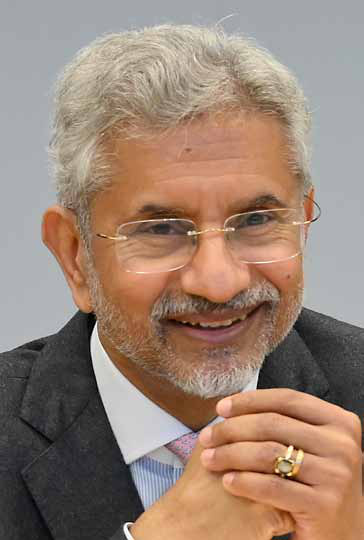
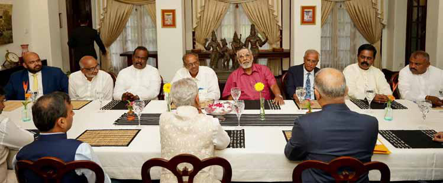
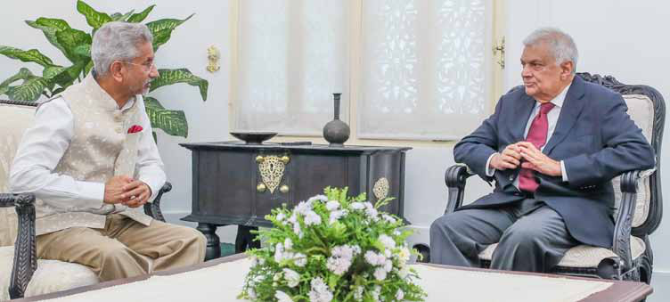
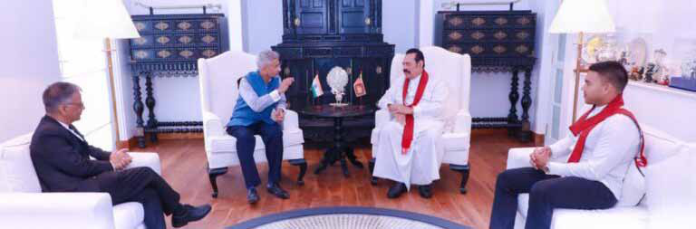
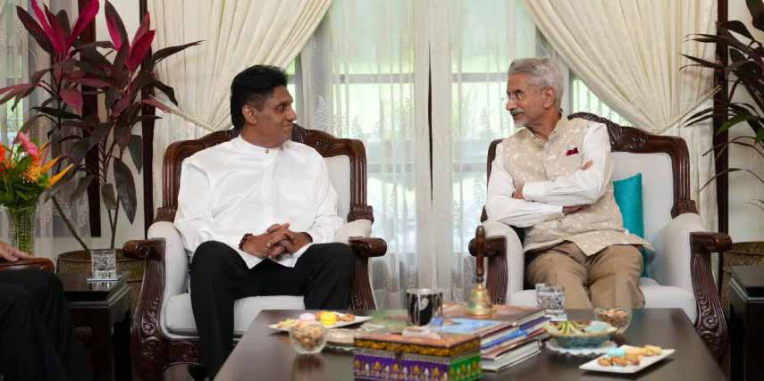

Dr. Jaishankar Meets Sri Lankan Leaders and Witnesses ITAK Internal Dispute
Dr. Jaishankar Meets Sri Lankan Leaders and Witnesses ITAK Internal Dispute
Jaffna Monitor hellojaffnamonitor@gmail.com 5 D r. S. Jaishankar, the Indian External Affairs Minister, undertook an official visit to Sri Lanka on June 20, 2024, marking his first bilateral engagement since his reappointment. This visit came shortly after President Ranil Wickremesinghe visited India on June 9-10, during which he attended the swearing-in ceremony of the new Indian government following the General Elections. This trip is Dr. Jaishankar's fifth official visit to Sri Lanka, with previous visits recorded in January 2021, March 2022, January 2023, and October 2023. During his visit, Dr. Jaishankar engaged with a broad spectrum of Sri Lankan leaders, including President Ranil Wickremesinghe, Prime Minister Dinesh Gunawardena, Opposition Leader Sajith Premadasa, and former President Mahinda Rajapaksa. The Indian External Affairs Minister called on President Wickremesinghe at the President's House, where they held a one-on-one meeting followed by comprehensive delegation-level talks. These discussions saw the involvement of several prominent Sri Lankan ministers, including Minister of Ports, Shipping, and Aviation Nimal Siripala de Silva; Minister of Agriculture and Plantation Industries Mahinda Amaraweera; Minister of Foreign Dr. Jaishankar Meets Sri Lankan Leaders and Witnesses ITAK Internal Dispute By: Our Political Correspondent A Day of Diplomacy and Drama: Dr. S. Jaishankar

Jaffna Monitor hellojaffnamonitor@gmail.com 6 Affairs Ali Sabry; and Minister of Power and Energy Kanchana Wijesekera. In a whirlwind of diplomatic activity, Dr. Jaishankar met even more leaders, accomplishing all these engagements in just a single day, proving that diplomacy can be a marathon run at the speed of a sprint. President Ranil Wickremesinghe and Dr. Jaishankar jointly handed over 48 houses under the Model Village Housing Project in the Colombo and Trincomalee districts, as well as 106 houses under Phase III of the Indian Housing Project in the Kandy, Matale, and Nuwara Eliya districts. Additionally, the Maritime Rescue Coordination Centre (MRCC), a critical hub for search and rescue operations at sea, established with an Indian grant of USD 6 million, was commissioned in a virtual ceremony. In a press release, India's Ministry of External Affairs stated, "The interaction of Dr. Jaishankar with the leadership of the Government of Sri Lanka provided an opportunity to review and accelerate progress in the multifaceted India-Sri Lanka partnership. One of the key focus areas of discussion was the Vision Document adopted by President Wickremesinghe and Prime Minister Shri Narendra Modi during the former's visit to India in July 2023. The discussions added momentum to the ongoing projects and initiatives for promoting connectivity in all its dimensions, particularly in the domains of energy, physical infrastructure, and economic and people-to- people ties". Dr. S. Jaishankar held separate meetings with former President Mahinda Rajapaksa, the Leader of the Opposition, Mr. Sajith Premadasa, and leaders of various political parties from the North, East, and upcountry regions. The session with our Tamil leaders from the North and East turned into quite a spectacle, thanks to a lively public disagreement between Ilankai Tamil Arasu Kachchi (ITAK) 's two factional leaders, S. Shritharan and M. A. Sumanthiran. Eight Tamil leaders attended the meeting. The lineup included Mavai Senathirajah, former ITAK leader; M. A. Sumanthiran, ITAK's one faction leader; S. Shritharan, another ITAK faction leader; Shanakiya Rasamanickam, ITAK's Batticaloa district MP; Dharmalingam Sithadthan, MP and Leader of the People's Tamil MPs who attended the meeting with Indian External Affairs Minister S. Jaishankar

Jaffna Monitor hellojaffnamonitor@gmail.com 7 Liberation Organisation of Tamil Eelam (PLOTE); Selvam Adaikalanathan, Leader of the Tamil Eelam Liberation Organization (TELO); C.V. Vigneswaran, Leader of the Tamil People's National Alliance (TPNA); and Selvarajah Kajendren, general secretary of the Tamil National People's Front (TNPF). Except for Mavai Senathirajah, the others are Members of Parliament. Ironically, just days before this meeting, Kajendren had accused the Indian government under Modi of supporting "Buddhization" in the North and East and alleged that the Modi government acts against the wishes of Sri Lankan Tamils. Yet, in a twist of political theatre, Kajendren still attended the meeting, proving that in politics, sometimes you have to crash the party you just complained about. Credible sources who attended the meeting told the Jaffna Monitor that it felt more like a casual courtesy call than a serious discussion of issues. They mentioned that the allotted time for the meeting was merely 30 minutes, and thanks to our leaders' non-stop talking, Indian Foreign Minister Dr. Jaishankar had little chance to speak. "Jaishankar clearly told us that he chose Sri Lanka for his first foreign visit after being reappointed as the Foreign Minister of India because of India's 'Neighbourhood First' policy," one MP shared with the Jaffna Monitor. He added, "In my opinion, it seemed he was compelled to meet us to show Tamil Nadu and others that he had also engaged with Tamil leaders from the North during his brief one-day trip to Sri Lanka." The MP chuckled as he recounted the meeting, saying, "We were told the meeting would last 30 minutes, but our MPs should have let Jaishankar get a word in. Honestly, Jaishankar didn't say much. Out of 30 minutes, our MPs talked for 32," he joked. The highlight of the meeting was the all-too- familiar public disagreement between ITAK's two factions right in front of Jaishankar. One faction leader, Shritharan, confidently informed Jaishankar that they support a common Tamil candidate for the presidential election. This was immediately refuted by the other faction leader, Sumanthiran, who retorted, "We are opposing it." Jaishankar undoubtedly witnessed firsthand the dynamic Dr. S. Jaishankar with Sri Lankan President Ranil Wickremesinghe in a formal meeting, discussing bilateral relations and cooperation.

Jaffna Monitor hellojaffnamonitor@gmail.com 8 and often dramatic nature of ITAK politics. Meanwhile, TNPF's Kajendran voluntarily chimed in, stating that they also oppose the idea of a common Tamil candidate and are advocating for a boycott of the election. Out of curiosity, Jaishankar asked what was happening with the common Tamil candidate and whether they were serious about it. In response, C. V. Vigneswaran mentioned that the matter was still being discussed and that some civil society groups were involved. Another Member of Parliament from the Jaffna district spoke to the Jaffna Monitor about his discussion with Indian Foreign Minister S. Jaishankar. He stated, "I requested the Indian government's assistance to enable the Provincial Council to function immediately. I also informed him that the three main presidential candidates in the upcoming Sri Lankan presidential election— Ranil Wickremesinghe, Sajith Premadasa, and Anura Kumara Dissanayake—agreed to make the Provincial Council operational. Minister Jaishankar listened to me patiently." He continued, "I raised the issue of illegal land grabbing occurring in the North and East. Whether it's Vedukkunaari Hill in Mullaitivu, Thaiyiddy in Jaffna, or Mayilathamadu in the East, these are all part of a master plan to seize Sri Lankan Tamil lands. I emphasized this to Jaishankar, who has been a known friend of mine for more than two decades,' he said. Another Tamil leader we spoke with had quite the tale to tell. While he told Jaishankar that their party was backing a common Tamil candidate, his private chat with the Jaffna Monitor revealed a different story. "I see it as a joke," he chuckled. "Firstly, some so-called civil society groups can't dictate what political leaders should do—they have a different role to play. Secondly, if everyone agrees to nominate a common Tamil candidate, he must be a good one. While C. V. Vigneswaran is ready to contest, we all know he will end up being a joker, as always, in this election, too". He went on to explain, "According to the constitution, anyone contesting the presidential election must be a former MP. These civil society leaders can't contest independently. If a civil society leader wants to run for president, they must do so under a party's banner. Suresh Premachandran, Leader of the Eelam People's Revolutionary Liberation Front (EPRLF), mentioned that a common Tamil candidate could contest from his party, but it's yet to be seen how serious he is about this claim." Continuing his candid assessment, he said, Dr. S. Jaishankar in deep discussion with former Sri Lankan President Mahinda Rajapaksa.

Jaffna Monitor hellojaffnamonitor@gmail.com 9 "If a Tamil candidate contests, he should at least secure 50% of the Tamil votes; otherwise, it will become a cruel joke. Currently, there is no universally accepted Tamil leader. For instance, Sampanthan, the Trinco MP of ITAK, could be a suitable candidate, but he is very old and fragile and will not contest." Finally, he painted a vivid picture: "Assuming the Tamil voter base in the North and East is around ten lakhs, if eight lakhs of Tamils vote, the common Tamil candidate should secure at least half of those votes, which is four lakhs. However, there's no way a common Tamil candidate can garner that much support, and it will become a laughingstock." When contacted by the Jaffna Monitor, another MP mentioned that he raised several concerns with Jaishankar. He said, "I emphasized the need for India to pressure Sri Lanka to implement the 13th Amendment. When implemented, Tamils can protect provincial lands, and schools and hospitals will be nationalized." Interestingly, his party had opposed this Amendment for years due to the fear of the LTTE (Liberation Tigers of Tamil Eelam), who were against any political solution that did not include a separate state. He added that Prime Minister Modi's third- term victory significantly boosts Sri Lankan Tamils, creating unease among Sinhalese leaders. "The recent loose talks by hard-core Sinhala leaders like Wimal Weerawansa are a classic example of this unease," he noted. We spoke with an Indian source close to Jaishankar regarding the Tamil MPs not letting Jaishankar speak. He remarked, "Jaishankar has been a diplomat for many years before assuming the role of External Affairs Minister of India. If anything needed to be conveyed, he is capable of doing so in just a few seconds or minutes. I don't know what happened inside the meeting as I was absent, but I'm very sure that if anything needed to be conveyed to the Tamil MPs, Jaishankar definitely would have done it. Also, he isn't unhappy about not getting much time to talk. In fact, the officer joked that it was a nice break for him from the usual diplomatic speeches, and he got to enjoy the show even if it was a bit of nonsense." Dr. S. Jaishankar with Sri Lankan Opposition Leader Sajith Premadasa
